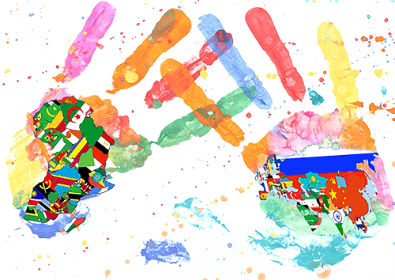

#320: Devenir membre actifs d'ONG ou oeuvres : #321: Rebloguer tous les "favoris humanitaires" sur awrness.com #322: Décrocher un diplôme en Développement International/humanitaire #323: (Finir de) lire mes livres sur le développement et poster la critique littéraire sur awrness.com : #324: Écrire sur awrness à propos de mes amis réfugiés et leur vie (au Cambodge, en Palestine, ...) #325: Écrire sur awrness mes projets et idées #326: Écrire sur awrness mes réflections sur le système de développement international #327: Mettre en place et communiquer sur mon système de crowdfunding pour un support long-terme des missions ou réfugiés(>awr.io) #328: Faire un clip à propos des réfugiés #329: Faire un docu fiction sur la crise au Venezuela #330: Faire une série sur la vie et le cheminement d'un réfugié #331: Mettre en lumière ce qui se passe actuellement dans le Nord de la France et à Paris #332: Mettre en lumière la "pauvreté cachée" en Suisse, France, GB #333: Mettre en lumière les complications humanitaires au Soudan, Syrie, Yemen, ... #334: Mettre en lumière les efforts faits au Laos, Cambodge,... #335: Mettre en lumière ce qui est fait pour améliorer la situations des SDF ou des gens en pauvreté extrême, particulièrement par les assocs locales #336: Mettre en lumière la situation des réfugiés, en montrant en particulier la différence de gestion et traitement en Europe du Nord, Europe occidentale, et le Sud
